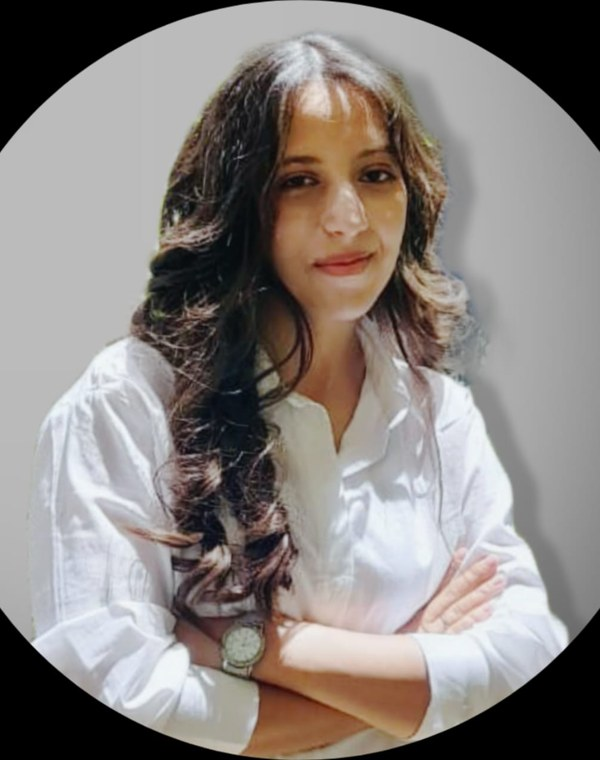

Formation, parcours et ce qui distingue ma façon de travailler.
Passionnée par l'informatique, l'analyse de données et le développement d'applications, je possède une solide formation académique ainsi qu'une expérience pratique acquise lors de plusieurs stages. Organisée, rigoureuse et dotée d'un bon esprit d'analyse, je m'adapte rapidement aux nouveaux environnements et je souhaite contribuer efficacement à des projets innovants tout en développant mes compétences professionnelles. J'aime apprendre continuellement de nouvelles technologies et approfondir mon expertise technique à travers des projets concrets.
Un aperçu de mes compétences professionnelles, techniques et linguistiques.
Mon parcours académique et mes stages professionnels.
Une sélection de travaux représentatifs de mon approche et de mes compétences.
Ouverte aux stages, projets académiques et opportunités en Data & Intelligence Artificielle.
Ouverte aux opportunités : Data Analyst, Data Scientist, Machine Learning Engineer, AI Engineer, Business Intelligence, stages et postes juniors.